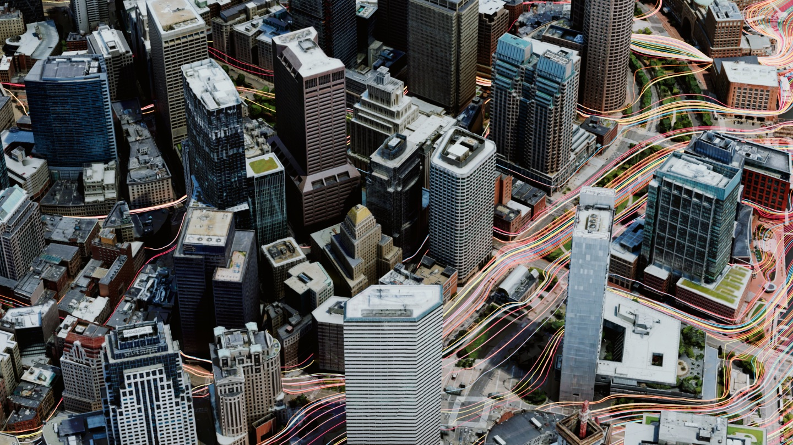
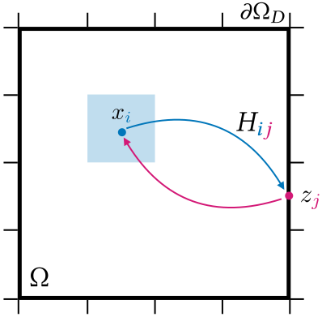

1Elliptic PDEs and Boundary Value Problems
Many real-world phenomena are governed by elliptic partial differential equations (PDEs): heat conduction, electrostatics, path planning, steady-state potential flow, and more. These are often cast as boundary value problems (BVPs), where values are prescribed on the boundary of a domain and we seek the solution to the PDE in the interior.
Consider for example the Laplace equation with Dirichlet boundary conditions:
Feel free to play with the interactive figure below to get an intuition for what this does:
Click and paint inside the dashed boundary band to paint Dirichlet values $g$. The interior satisfies $\Delta u=0$.
We can make things more interesting by considering more complex geometries and boundary conditions. For example,
people are often interested in solving mixed boundary value problems with Neumann boundary conditions
The interactive figure below illustrates this. Notice how the isolines bend to meet the zero-Neumann obstacle at right angles to satisfy $\frac{\partial u}{\partial n} = 0$.
Click and paint the dashed Dirichlet band as before. The interior obstacle (dashed blue) enforces $\partial u/\partial n = 0$ — isolines bend to meet it at right angles.
If you look closely, you'll see that the solution is actually "pixelated". This is because it is computed with
finite
differences on a grid. Finite differences are very easy to
understand and to implement but they don't deal very well with complex geometries, often requiring extreme grid
refinement. Another common alternative is to use finite elements. The
problem is that finite elements require
careful mesh generation, which can be particularly challenging and time-consuming for complex geometries

2Grid-Free Monte Carlo Methods
Luckily, the computer graphics community has recently revived an old idea: grid-free Monte Carlo methods. The canonical algorithm underpinning this approach is the Walk on Spheres (WoS) algorithm.
The intuition, from stochastic calculus, is that if you were to simulate a Brownian motion (a continuous random walk) starting from an interior point $x$, it would eventually hit the boundary at some random location $Z_\tau$. The expected value $\mathbb{E}[g(Z_\tau)]$ of the boundary condition at that random location is exactly the solution to the Dirichlet problem given by .
Doing this independently at every interior point gives us the whole solution. With only a few walks per point the estimate is noisy, but as we average more and more, the Monte Carlo variance vanishes and the smooth harmonic solution emerges. The figure below loops this automatically; pause and drag the slider to inspect any noise level:
Every interior pixel runs independent Walk-on-Spheres estimates of $u(x)=\mathbb{E}[g(Z_\tau)]$. Averaging more walks per pixel denoises the field into the harmonic solution. It runs continuously; the slider sets how fast.
However, simulating Brownian
motion is computationally expensive and often biased
The entire process is illustrated in the interactive figure below. For Neumann boundary conditions, it turns out
that there is a special variant of WoS called Walk on Stars (WoSt)
Click anywhere inside to start a walk; many more walks are run in the background to fill the histogram.
Monte Carlo methods are truly magic! However, as you can see by playing with the interactive figure above, random
walks take a lot of steps before they hit the boundary. This is particularly true for problems with complex
geometries and Neumann-dominated boundaries
In our work, we address this issue in two complementary ways
3Divide to Conquer: Shorter Walks
When a problem is complicated, the natural solution is to break it down into smaller, more manageable pieces. This is a common strategy in numerical methods: domain decomposition, multigrid, hierarchical matrices, and so on. And this is precisely the path we also followed in our paper.
First, observe that a beautiful property of $\Delta u = 0$ in is that this holds everywhere, including on subdomains of the entire domain $\Omega$. As such, a key intuition is that walks can naturally be made shorter by decomposing the domain into smaller subdomains.
More formally, we propose to decompose the domain into a partition of smaller non-overlapping subdomains $\mathcal{D}=\{\Omega_i\}$, for example regular tiles. On each tile, the Dirichlet boundary is the union of (a) physical Dirichlet pieces inherited from $\partial\Omega_D$ and (b) artificial Dirichlet pieces — the interfaces with neighboring tiles. Note that this decomposition does not require any meshing. Subdomains can be totally arbitrary, are free to intersect Neumann boundaries, and can cover parts outside of the domain $\Omega$.
Walks within a tile now stop at the tile's boundary as shown in the interactive figure below. Feel free to adjust the tiling resolution and see how it affects walk lengths in the histogram.
Walks terminate at tile interfaces; shrink the tiles and the histogram moves to the left.
This strategy gives us Walks in Decomposed Subdomains. So why does our paper title say Walks on Decomposed Subdomains? There's still some way to go. On their own, these walks don't tell us much yet: we still don't know the values at the interfaces between subdomains.
This is where the connection to grid-based solvers will come into play. But before that, we need to understand Poisson kernels and solution operators.
4Poisson Kernels and Solution Operators
Within a single tile $\Omega_i$, is also satisfied, so knowing the boundary values fully determines the interior solution. Concretely, we can encode this as a linear operator $\mathcal{H}_i$ that maps boundary values to interior values:
In other words, $u(x) = \mathcal{H}_i[u](x)$ for all $x \in \Omega_i$. But how do we get $\mathcal{H}_i$? It's locally the solution of the PDE after all...
The idea is to observe that $\mathcal{H}_i$ can be written in integral form
where $P_{\Omega_i}(x, z)$ is called the Poisson kernel. The key observation is that $P_{\Omega_i}(x, z)$ is exactly the first-passage probability density of a Brownian motion starting at $x$ and hitting the boundary at $z$. Wait — isn't that precisely what Walk on Spheres computes?
Exactly, and that gives us an easy recipe to approximate it: for a point $x \in \Omega_i$, we run many random walks from $x$ and bin where they exit on $\partial\Omega_i$. The interactive figure below visualizes the Poisson kernel for various domains tabulated using this strategy.
Drag $x$ to move the source. Drag the dashed Neumann obstacle to move it; or adjust shape parameters with the sliders. Histograms on the boundary show the Poisson kernel $P(x, z)$, i.e., the first-passage probability density along $\partial\Omega_D$.
The Poisson kernel has a dual interpretation: instead of fixing $x$ and asking where the walk exits, fix a boundary point $z$ and ask which interior points are most likely to send walks there. In other words, how a unit point source at $z$ on the Dirichlet boundary affects the interior — this is precisely the solution operator!
Drag $z$ anywhere along $\partial\Omega_D$. The interior is the Poisson kernel $P(\cdot, z)$ — the response to a point source at $z$. The "source width" smooths the source to emphasize the effect.
As implied by the interactive figures above, there's a natural and simple way of precomputing and discretizing
solution operators as a simple matrix $\mathbf{H}$

By tabulating one discrete solution operator $\mathbf{H}_i$ for each tile $\Omega_i$, we can solve the discrete Dirichlet problem within each tile by a simple matrix-vector multiplication. However, this still doesn't tell us how to find the values at the interfaces between tiles. Enter absorbing Markov chains!
5Absorbing Markov Chains
An absorbing Markov chain is also a random walk, but this time on a discrete (and finite) set of states $\mathcal{S}$. Some states $\mathcal{T}$ are called transient (the walker may pass through them, possibly many times) and the rest $\mathcal{A}$ are absorbing (once entered, the walker never leaves), such that $\mathcal{S} = \mathcal{T} \sqcup \mathcal{A}$. The figure below provides a simple example.
A key observation is that we can also define a boundary value problem on the absorbing Markov chain analogous to . Concretely, as shown in the interactive example below, we can prescribe values on absorbing states, run walks from transient states until they are absorbed, and average the absorbing values to get a solution defined on the transient states, i.e., $$u(t) = \mathbb{E}[g(A_\tau) \mid X_0 = t]$$ for any transient state $t \in \mathcal{T}$, where $A_\tau \in \mathcal{A}$ is the absorbing state where the walk ends and $g$ holds the prescribed values at absorbing states. This is very reminiscent of the Walk on Spheres algorithm, isn't it?
The interactive figure below provides an example for a simple Markov chain linking two absorbing endpoints.
Drag the vertical sliders next to each absorbing endpoint to set its boundary value. Click on any transient node to start a walk. Drag the slider beneath each node to change its transition probability. The inner color of each interior circle is the running Monte Carlo estimate. You can launch many walks with "Run walks" or show the exact solution with "Show exact solve".
Note how we're absolutely free to choose arbitrary transition probabilities and how they influence the
solution
You may have also noticed that, even with a handful of states, you need to launch quite a few walks before the Monte Carlo estimate stops wiggling around. So here is the natural question: do we really have to simulate random walks?
Look at any transient state $i$. By the memoryless property of Markov chains, a walker sitting at $i$ takes a single step to a neighbor $j$ with probability $P_{ij}$, and from there the rest of the walk is statistically identical to a fresh walk launched at $j$. In other words, the expected absorbed value at $i$ is just the weighted average of the expected absorbed values at its neighbors:
This is exactly a discrete analog of the Laplace equation : each
interior value is the average of its neighbors, with prescribed values on the boundary
To make this concrete, split the transition matrix into transient-to-transient and transient-to-absorbing blocks,
and collect the unknown transient values into a vector $\mathbf{u}_{\mathcal{T}}$ and the prescribed absorbing values into $\mathbf{g}$. The averaging identity above becomes $\mathbf{u}_{\mathcal{T}} = \mathbf{Q}\,\mathbf{u}_{\mathcal{T}} + \mathbf{R}\,\mathbf{g}$, i.e.,
That's it. As long as every walk is eventually absorbed (which it is, with probability one), $\mathbf{I} - \mathbf{Q}$ is invertible, and a single linear solve hands us the exact expected absorbed value at every transient state at once: no sampling, no variance, no waiting for the estimator to settle. Try it in the figure above with "Show exact solve": the colors should snap to their final values immediately!
One last fun thing for the road! It turns out that you can see $\mathbf{I}-\mathbf{P}$ as a random-walk Laplacian. In 1D, if we choose a symmetric random walk, the corresponding random-walk Laplacian should be very familiar to you: it's exactly the three-point finite difference Laplacian in 1D (up to a scaling factor).
And in 2D, the random-walk Laplacian for a symmetric walk on a regular grid recovers the standard five-point finite-difference stencil.
From there, you probably see the pattern. What if instead of these canonical probabilities, we considered more general transition probabilities based on the geometry of the subdomains?
6Coupling Tiles via an Absorbing Markov Chain
Now we finally have all the pieces to recover values at interfaces between subdomains! The trick is to Walk
on
Decomposed Subdomains, or more precisely on their interfaces.
To do so, we use the strategy defined in to estimate and tabulate
transition probabilities between interfaces
Once interface values are known, the boundary of every tile is fully determined, and we recover each tile's interior with a single matrix–vector product using precomputed solution operators for the interior, i.e., $\mathbf{H}_i$ as defined in . These per-tile reconstructions are independent and thus trivially parallelizable.
The interactive figure below summarizes all steps of the pipeline. Feel free to slide through the various stages and play with the different parameters.
Slide through the pipeline.
7Additional Benefits
One thing that I haven't mentioned is that in practice, we needn't compute solution operators for every tile of
the domain. If a tile does not intersect geometry, its solution operator is the same everywhere and we can
precompute it only once across all scenes
Precomputed (shared): —
Pick a scene and adjust $T$. Only the highlighted tiles must have their solution operator estimated; all empty tiles share a single closed-form operator computed once.
Another beautiful thing is that our approach exposes an adjustable trade-off between the cost of stochastic Monte
Carlo
estimation of solution operators (which is highly parallelizable within each individual tile) and the cost of the
deterministic global solve on interfaces. As can be seen in the interactive figure below, at fixed output
resolution $N$, increasing the size $B$ of each tile requires more Monte Carlo effort per tile, but the
deterministic global solve becomes cheaper because the interfaces it couples are fewer and farther apart. In other
words, we can directly amortize the $O(N^2)$ degrees of freedom of the global solve to $O(N^2/B)$ degrees of
freedom if we can afford more Monte Carlo
Interface values at fixed $N$. Tile interfaces are the only unknowns of the global solve.
System size of the deterministic global solve as a function of subtile resolution $B$.
8Reflections and Future Work
I am very excited by our work and the doors it opens for future research. One thing people often bring up is the
analogy to radiosity and Monte Carlo path tracing in rendering
In this context, Peter Shirley famously said in an email thread in 1997:
In summary, pure MCPT has only two advantages — it is so dumb that it doesn't get hit by big scenes, and it is easy to implement. […]
I think the solution is hybrid methods — add bias! (This is blasphemy in MC circles :^) ). I do want to keep the good parts of MC methods — they are damned robust and are possible to implement correctly — my MC code does not bomb on weird untweaked inputs — tell me with a straight face that is true of most non-MC implementations. However, you are right that the results are too noisy!!! We can keep these benefits and reduce noise if we add bias the right way (not that I know what that right way is).
One thing I highlighted here is that Peter Shirley was right: to be adopted, Monte Carlo methods needed "hybrid methods". And the solution was denoising! Without denoising, existing visual effects and animated films would probably not be path traced! People even won an Academy Award for that.
So, to be competitive with classical numerical methods, do Monte Carlo PDE solvers also need hybrid approaches? Probably yes! But is denoising the right answer? Maybe not.
In our paper, we take a different route and instead try to reconcile grid-free Monte Carlo methods with grid-based solvers. One thing that I learned with this project is that grid-based methods just work so well: if you want convergence, you simply cannot beat them! And it's not a surprise, ask anyone doing numerical analysis and they will tell you something like:
Monte Carlo is an extremely bad method; it should be used only when all alternative methods are worse.
My take is: lean on the well-known benefits of grid-based methods as much as possible (e.g., strong and fast convergence guarantees), and bring in grid-free Monte Carlo where grid-based methods suffer most (e.g., complex geometry).
That said, there is still a long way to go: generalizing to other PDEs or boundary conditions, better discretization schemes, dedicated global solvers, improved Monte Carlo estimators, etc. Rest assured that we are working on that...